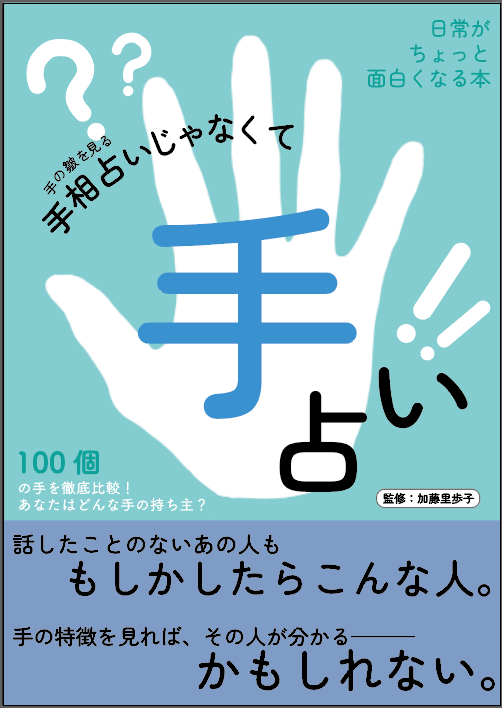
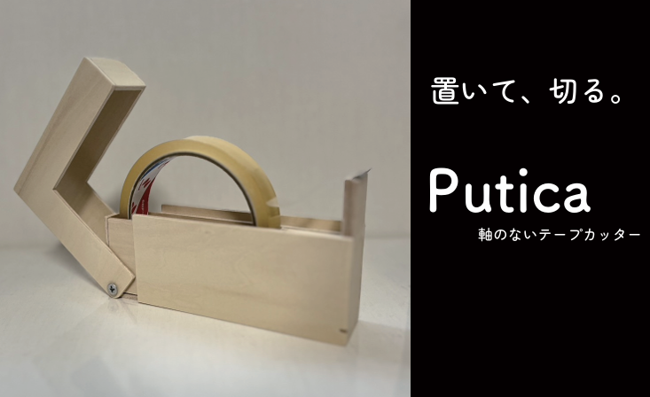
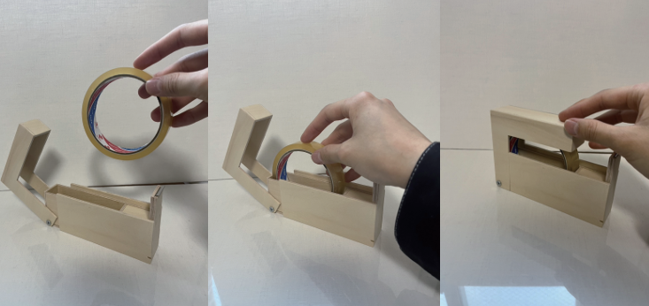
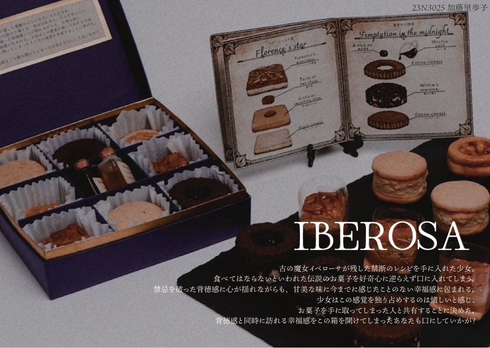

Name:加藤里歩子
Dete of birth:20/03/2005
Age:19
MBTI:INFJ
Oqqupation:大学生
Hobby:ギター、歌
こんにちは！
デザイン工学部システムデザイン学科所属の加藤里歩子です。
現在は大学でデザインについて広く学んでいます。
まず、私が大学で私が作ってきたものを紹介します！
「手相じゃなくて手占い」
この作品は“メディアデザイン”という講義で制作したものです。
テーマについて100枚の写真を集め、雑誌のようにレイアウトを行いました。
同じようで全く異なり個性あふれる手は、もしかしてその人を表しているのかもしれません....
「Putica-軸のないテープカッター-」
 この作品は“インダストリアルデザイン”という講義で制作したものです。
テープの軸をなくすことで、交換時のストレスをなくした作品です。
ガバっと開けてカンっと閉める使い心地の良さをとシンプルなつくりの良さを追求しました。
「IBEROSA-禁断のお菓子-」
この作品は“プロダクトデザイン”という講義で制作したものです。
お菓子を実際に作ってブランディングを行うといった内容で、クッキーを製作しました。
ストーリーに没入し、禁断の背徳感あふれる体験を提供します。
そんな私の所属する学科が気になった方はこちらから！
HPでは講義や教員の紹介、先輩方の作品や受賞した賞なども確認できます!